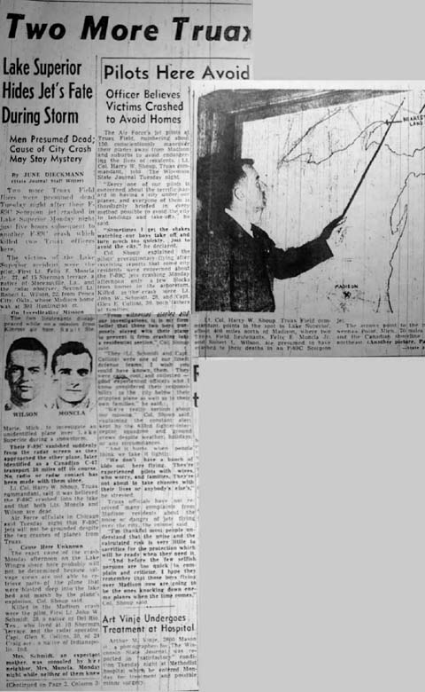

State Journal de Madison (Wisconsin) le mardi 24 novembre 1953.
| Home > Enquête > Dossiers > Kinross |
|---|
|  |
Par June Dieckmann (rédactrice du State Journal)
2 nouveaux aviateurs du terrain de Truax étaient présumés morts mardi soir après que leur jet F-89C Scorpion se soit écrasé dans le Lac Supérieur lundi soir juste quelques heures après un autre crash de F-89C qui avait tué ici 2 officiers de Truax.
Les victimes de l'accident du Lac Supérieur furent le pilote, le 1er lieutenant Felix E. Moncla Jr., 27 ans, de 15 Sherman Terrace, un natif de Moreauville, en Lousiane, et l'observateur radar, le 2nd lieutenant Robert L. Wilson, 22 ans, de Ponca City, dans l'Oklahoma, dont la résidence à Madison était au 301 Huntington Ct.
Les 2 lieutenants disparurent alors qu'ils étaient partis en mission depuis la base aérienne de Kinross à Sault Ste Marie, dnas le Michigan, pour investiguer sur un avion non-identifié au-dessus du Lac Supérieur pendant une tempête de neige.
Leur F-89C disparut soudainement de l'écran radar alors qu'ils approchaient de l'autre avion, plus tard identifié comme un C-47 de transport canadien, ayant dévié de 30 miles de sa course. Aucun contact radio ou radar ne fut plus établi avec eux à partir de là.
Le lieutenant-colonel Harry W. Shoup, commandant de Truax, a déclaré que l'on pensait que le F-89C s'était écrasé dans le lac et que les lieutenants Moncla et Wilson étaient morts.
Des responsables de l'Air Force à Chicago ont déclaré mardi soir que les jets F-89C ne seront pas maintenus au sol malgré les 2 crashes d'avions de Truax.
|
La cause exacte edu crash lundi après-midi sur la berge du Lac Wingra ici ne sera probablement pas déterminée, les équipes de sauvetage n'ayant pas parvenu à récupérer les parties de l'avion qui were blasted deep into the lake bed and marsh by the plane's explosion, Col. Shoup said.
Killed in the Madison crash were the pilot, First Lt. John W. Schmidt, 28, a native of Del Rio, Tex., who lived at 10 Sherman Terrace, and the radar operator, Capt. Glen E. Collins, 30, of 24 Craig Ave. a native of Indianapolis, Ind.
Mme Schmidt, une mère enceinte, fut consolée par sa voisine, Mme Moncla, lundi soir alors qu'aucune d'entre elles ne savait qu'au même moment l'avion du lieutenant Moncla s'était écrasé dans le Lac Supérieur, à 400 miles de là.
Les lieutenants Moncla et Wilson faisaient partie du 433ème escadron de chasseurs-intercepteurs temporairement basé au terrain de Kinross le temps que les membres de l'escadron qui s'y trouvent suivent un ré-entraînement au tir à Yuma, Arizona.
A 17 h 22 lundi, les lieutenants Moncla et Wilson furent dépêchés lors d'une tempête de neige pour investiguer sur l'avion non-identifié à quelques 100 miles au nord de Sault Ste Marie.
Alors que l'écran radar révélait qu'ils approchaient de l'autre avion, ils disparûrent.
Le colonel Shoup dit qu'il pensait que les lieutenants Moncla et Wilson devaient avoir brusquement rattrapé l'avion de transport et "esquivé" pour éviter une collision. Le jet avait peut-être calé et était parti en vrille, s'écrasant dans le lac, dit-il.
Aucun signal de détresse ne fut émis par radio par les lieutenants.
Les équipes de sauvetage air-mer des forces aériennes canadienne et U.S. ainsi que les bases de gardes-côtes poursuivirent leurs recherches des aviateurs mardi soir, mais furent entravées par la neige et la mauvaise visibilité.
La terre la plus proche de l'endroit où le jet de Truax est supposé s'être écrasé est Keweenaw Point, dans le Michigan, à 70 miles au sud-ouest, et la ligne de côte canadienne qui est à 40 miles au nord-est.
Les responsables du terrain de Kinross ont rapporté que le jet avait 2 h de carburant lorsqu'il décolla lundi soir. L'avion était équippé de 2 canots pneumatiques et chacun des lieutenants portait un gilet de survie.
Le colonel Shoup dit que même si les lieutenants Moncla et Wilson avaient été capables de gonfler et d'embarquer dans les canots, on ne pense pas qu'ils aient pu survivre la nuit sur Lac Supérieur glacial, balayé par la neige.
Le lieutenant Moncla était venu au terrain de Truax en juillet 1952. Lui et Mme Moncla avaient une fille, Sharon, de 5 mois, et 1 fils, David, de 20 mois. Le lieutenant Wilson, qui n'était pas marié, avait été affecté à Truax en juin dernier.
| Home > Enquête > Dossiers > Kinross |
|---|